10 部片单 · 剧情 / 科幻 / 爱情 / 传记
| # | 片名 | 类型 | 评分 / 状态 |
|---|---|---|---|
| 01 | 布达佩斯大饭店 | 喜剧 / 剧情（美德英合拍 · 一个消失的欧洲） | 8.9 / 92% / 88 |
| 02 | 疯狂的麦克斯4：狂暴之路 | 动作 / 科幻（澳美合拍 · 一路向西） | 8.7 / 97% / 90 |
| 03 | 月光男孩 | 剧情 / 成长（美国 · 三段黑皮肤） | 7.4 / 98% / 99 |
| 04 | 银翼杀手2049 | 科幻 / 悬疑（美英加西合拍 · 三十年后） | 8.3 / 88% / 81 |
| 05 | 罗马 | 剧情 / 家庭（墨西哥 / 美国 · 黑白） | 8.2 / 96% / 96 |
| 06 | 寄生虫 | 剧情 / 黑色喜剧（韩国 · 半地下室与山坡） | 8.8 / 99% / 96 |
| 07 | 无依之地 | 剧情 / 公路（美国 · 现代游牧者） | 8.0 / 94% / 94 |
| 08 | 世界上最糟糕的人 | 剧情 / 爱情（挪威 · 三十岁的岔路口） | 8.0 / 96% / 90 |
| 09 | 分手的决心 | 爱情 / 悬疑（韩国 · 山与海） | 7.6 / 94% / 85 |
| 10 | 奥本海默 | 传记 / 历史（美英合拍 · 三个小时与一个闪念） | 8.9 / 93% / 88 |
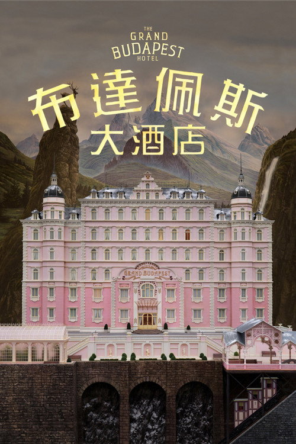
布达佩斯大饭店 The Grand Budapest Hotel
「文明的微光，还留在这间饭店里。」
剧情梗概
一位作家来到昔日辉煌、如今衰败的布达佩斯大饭店，结识了饭店主人穆斯塔法。晚餐时，穆斯塔法讲起自己年轻时的往事：那时他还是个叫「零」的门童，跟着传奇礼宾员古斯塔夫学怎么做一名出色的饭店员工。古斯塔夫深受年长女客人们的喜爱，其中富有的 D 夫人去世后把一幅名画留给了他——于是她的家族找上门来。
亮点
- 第 87 届奥斯卡九项提名、四项获奖：最佳美术指导、最佳服装设计、最佳化妆与发型、最佳原创配乐。
- 韦斯·安德森自编自导，灵感来自茨威格的小说与散文；片尾直接致谢了《昨日的世界》的作者。
- 拉尔夫·费因斯演的古斯塔夫几乎是全片的发动机：一个把「礼貌」当成护身符的人，他说脏话都要先道歉。
- 全片用三种画幅拍摄（1.37 / 1.85 / 2.35），对应 1930 年代、1960 年代与 1980 年代三个时间层。
- 摄影由罗伯特·耶曼担任，他跟了安德森二十多年；那些对称构图与横移镜头，以及所有糖果色的调子，都是他的手笔。
- 烂番茄 92% / Metacritic 88，豆瓣 8.9——少数在影评人与普通观众两边都几乎没有差评的当代片。
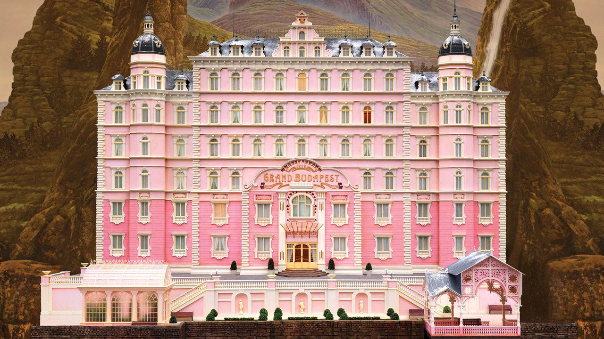
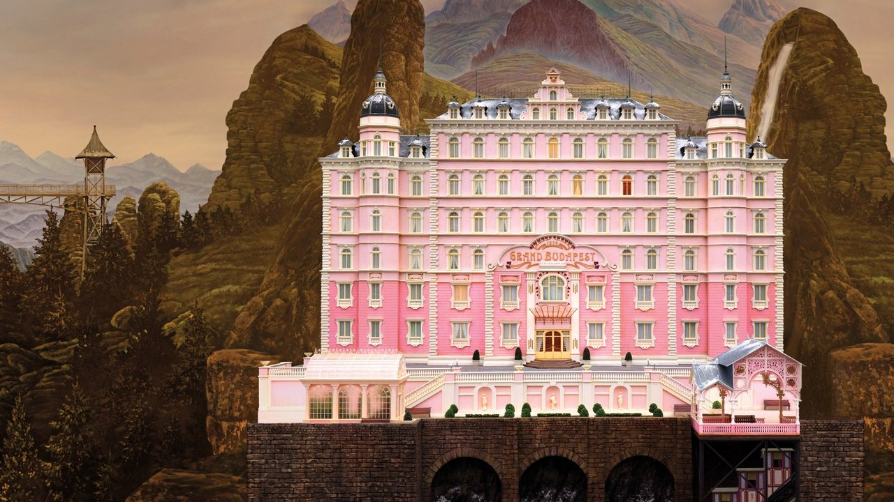
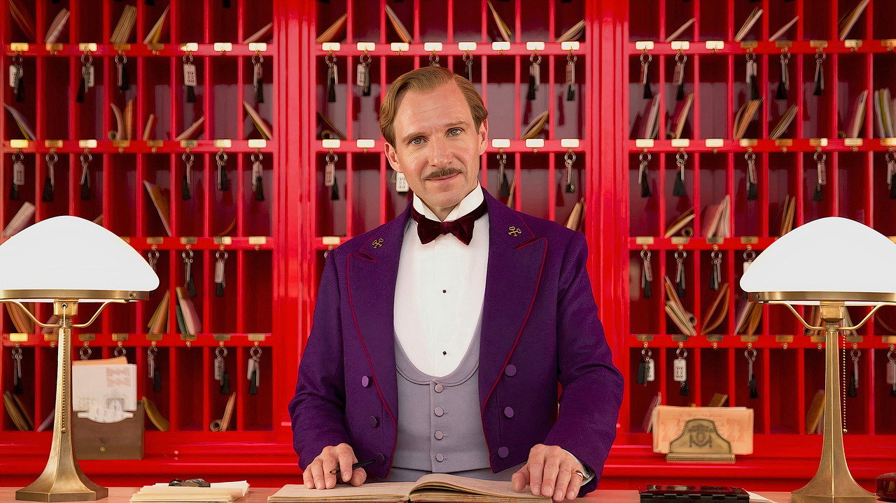
导演与主创 · 他们的历史作品
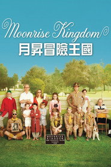
月升王国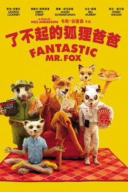
了不起的狐狸爸爸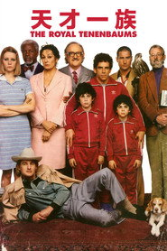
天才一族
 辛德勒的名单
辛德勒的名单 哈利·波特与死亡圣器（下）
哈利·波特与死亡圣器（下） 王牌特工：源起
王牌特工：源起 007：大破天幕杀机
007：大破天幕杀机 蜘蛛侠：英雄无归
蜘蛛侠：英雄无归 蜘蛛侠：英雄远征
蜘蛛侠：英雄远征 蜘蛛侠：英雄归来
蜘蛛侠：英雄归来短评（轻微剧透）
《布达佩斯大饭店》看起来是一个闹剧，其实是一封写给消失文明的信。安德森用糖果色、对称构图和一个接一个的荒诞人物，讲了一件正在被碾碎的事：古斯塔夫守的那套规矩——给客人开门、记住每一位夫人的名字、在逃亡路上也要喷香水——在一场已经开始的大战面前毫无用处。轻微剧透：真正扎人的转折在结尾。古斯塔夫为了替「零」辩护，被士兵带走，从此再没出现；而「零」继承了饭店，也继承了那套规矩。最后一个镜头是老年「零」坐在空荡荡的饭店里，说这座饭店是他与已故妻子共同保留下来的一点东西。安德森的态度一直很轻，但这一幕的重量很实在：文明不是被英雄救下来的，是被一些看上去很滑稽的人，一点一点搬到今天的。
为什么值得一看
想看韦斯·安德森美学最完整的一次的人；喜欢群像、荒诞幽默与精致美术的观众。含少量暴力、粗口与轻度性暗示，整体轻快。内地未映，流媒体可看。
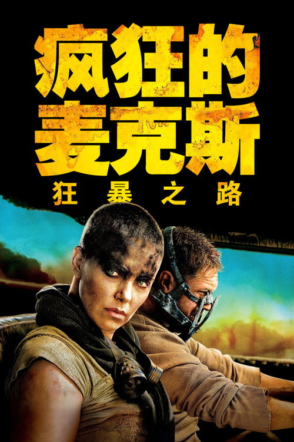
疯狂的麦克斯4：狂暴之路 Mad Max: Fury Road
「谁杀死了世界？我们都要负责。」
剧情梗概
文明崩塌后的荒漠里，不死乔掌控着水源与武装。他的得力战将弗瑞奥萨私自带着五名「生育者」叛逃，驾驶油罐车穿越沙漠，要回到她童年记忆里的那片绿地。一个叫麦克斯的男人被锁在车头当「血袋」，阴差阳错成了同路人。后面是整支军队，前面是一片沙暴。
亮点
- 第 88 届奥斯卡十项提名、六项获奖：剪辑、音效剪辑、音响效果、美术指导、服装设计、化妆与发型——技术奖项几乎全包。
- 乔治·米勒在拍完第三部三十年之后重启这个系列；他原本是急诊科医生，靠拍广告与《快乐的大脚》攒下的信誉换来了这次预算。
- 全片绝大多数动作是实拍：真实车辆、真实翻滚、真实特技演员，CG 主要用于擦除威亚与延伸背景。
- 查理兹·塞隆演的弗瑞奥萨才是这部片的主角；她剃了头、装上机械手臂，把「公路片」拍成了「回家」。
- 几乎没有任何旁白与说明，世界观全部靠画面上的细节交代；开场二十分钟没有一句对白是必要的。
- 烂番茄 97% / Metacritic 90，十年后被大量影评人选入「21 世纪最佳动作片」前三；豆瓣 8.7 同样极高。
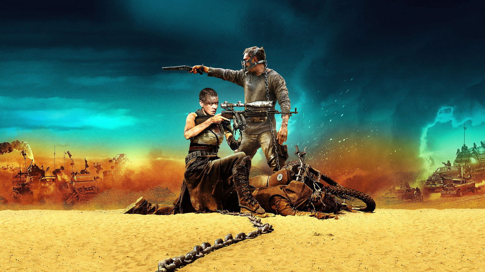
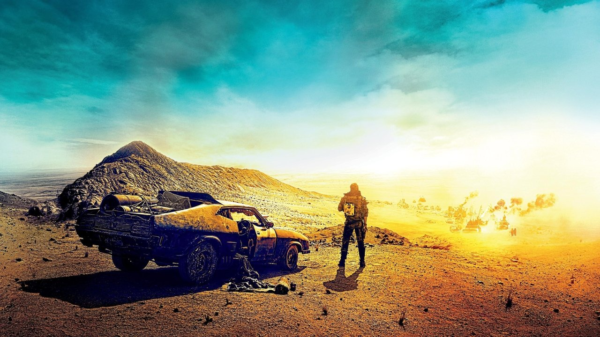
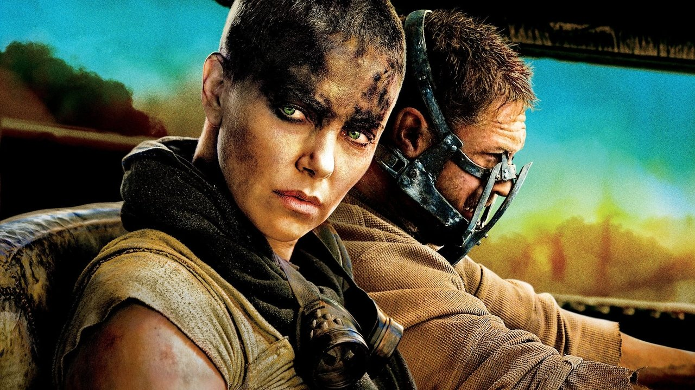
导演与主创 · 他们的历史作品
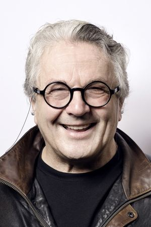
 疯狂的麦克斯：狂暴女神
疯狂的麦克斯：狂暴女神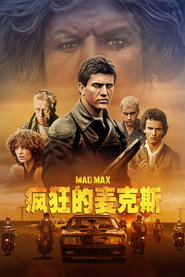
疯狂的麦克斯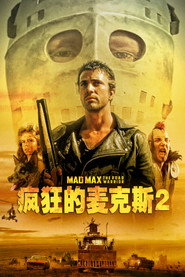
疯狂的麦克斯2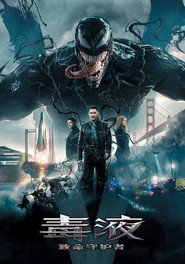
毒液：致命守护者 毒液2
毒液2 盗梦空间
盗梦空间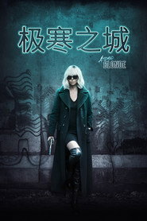
极寒之城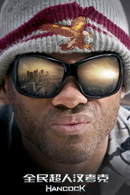
全民超人汉考克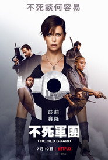
永生守卫 普罗米修斯
普罗米修斯短评（轻微剧透）
《疯狂的麦克斯4》最了不起的地方是它把动作片拍成了默片。米勒几乎不用对白解释任何事——谁是谁、为什么逃、往哪去，全靠构图、颜色和一次次的引擎声交代清楚。轻微剧透：真正的转折在中段。他们冲过沙暴、越过盐湖，最后发现那片记忆中的绿地早就变成了毒沼，而「回家」这件事本身已经不可能了。于是弗瑞奥萨做了第二个决定：掉头，杀回去，把不死乔的据点拿来当新的家园。这部片表面是追车，实际是一个关于「目的消失了以后怎么办」的故事——麦克斯还是那个只想往前开的男人，但这一次他跟着别人往回走了一趟。结尾那句「谁杀死了世界」，问的不是反派，是所有活着的人。
为什么值得一看
想看动作片能拍到什么程度的人；能接受几乎无对白、两小时高强度追逐与撞击的观众。含大量暴力、爆炸与人体改造画面，但血腥度不高。内地未映，流媒体可看。

月光男孩 Moonlight
「月光下，黑人男孩是蓝色的。」
剧情梗概
迈阿密的一个黑人男孩喀戎，母亲吸毒、同辈欺侮他，唯一对他好的是毒贩胡安。影片分三段：童年他叫 Little，少年他叫 Chiron，成年他叫 Black。第二段里，他和唯一的朋友凯文在海边有过一个夜晚；多年后，凯文打来了一通电话。
亮点
- 第 89 届奥斯卡最佳影片、最佳改编剧本、最佳男配角（马赫沙拉·阿里）三项大奖。
- 改编自塔瑞尔·阿尔文·麦克拉尼的未上演剧本《In Moonlight Black Boys Look Blue》；巴里·詹金斯与他是同乡，把剧本变成电影用了八年。
- 成本仅 150 万美元，却拿下奥斯卡最佳影片——是史上预算最低的最佳影片之一。
- 三段由三位演员分别演同一个角色：艾利克斯·希伯特、艾什顿·桑德斯、崔凡特·罗兹；开拍前三人没有一起对过戏。
- 摄影由詹姆斯·拉克斯顿担任，大量使用手持与近景；配乐是小提琴与弦乐改编的尼古拉斯·布里特尔作品。
- 口碑分裂点很明确：烂番茄 98% / Metacritic 99，是十年里评分最高的影片之一；豆瓣 7.4 / IMDb 7.4，落差主要来自叙事节奏与「没讲什么故事」的预期落空。


导演与主创 · 他们的历史作品
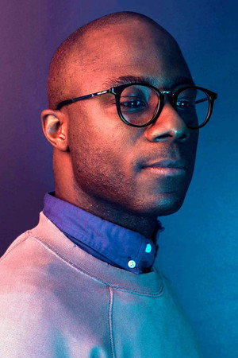
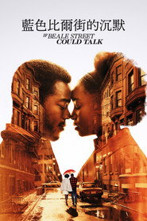
假如比尔街可以作证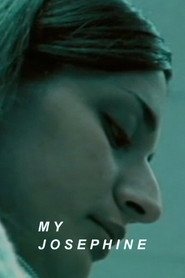
我的约瑟芬（短片）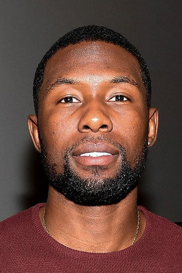
 蒙上你的眼
蒙上你的眼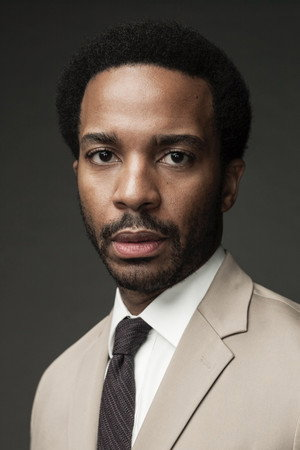
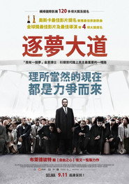
塞尔玛短评（轻微剧透）
《月光男孩》讲的是一个人怎么把自己藏起来。喀戎在所有阶段只做两件事：忍着，以及不让人看出来他在忍。詹金斯把三段拍成三种皮肤——童年的他瘦小、沉默，少年开始学会用拳头当盔甲，成年后他干脆把整个身体练成了一副盔甲。轻微剧透：真正的转折在最后。凯文打来电话，喀戎开车去找他，两个人坐在餐馆里说了很多年没说的话。凯文问他什么时候开始变成现在这样的、什么时候开始碰毒品的，喀戎只回了一句：「我挣钱了。」全片最动人的不是那个海边夜晚，而是成年后的他仍然愿意开车去见那个人——一个人藏了一辈子，最后还是把最软的那块拿出来了。詹金斯没有让它变成励志，只让它停在那一秒：一个黑人男孩，在月光下是蓝色的。
为什么值得一看
想看当代美国最被认可的独立片之一的人；能接受慢节奏、大量留白与情绪推进的观众。含毒品使用、校园霸凌与一场暴力，无大尺度血腥。内地未映，流媒体可看。
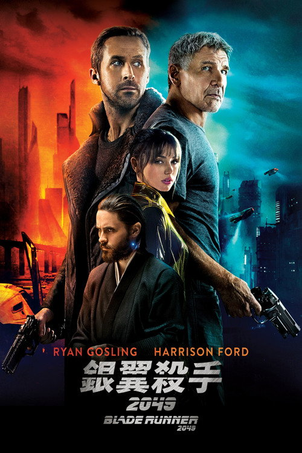
银翼杀手2049 Blade Runner 2049
「我见过的东西，你们人根本不会相信。」
剧情梗概
《银翼杀手》事件三十年后，新一代银翼杀手 K 负责「退役」旧型号复制人。一次例行任务里，他挖出了一具复制人的遗骨——她曾经分娩过。这个秘密如果传出去，剩下的人类社会会再次崩塌，于是 K 接到命令：抹掉它。他开始追查那个失踪三十年的前银翼杀手瑞克·戴克。
亮点
- 第 90 届奥斯卡五项提名、两项获奖：最佳摄影（罗杰·狄金斯，这是他拍了十三次提名后的第一次获奖）与最佳视觉效果。
- 丹尼斯·维伦纽瓦接手时坚持一件事：不做重启，只做续作，且必须回答 1982 年那部留下的空白。
- 片长 164 分钟，制作成本约 1.5 亿美元，全球票房约 2.6 亿——影评界一致叫好，票房却成了当年最著名的「亏本杰作」之一。
- 美术与摄影是本片真正的叙事手段：黄沙中的拉斯维加斯、雾气里的洛杉矶、以及那座巨大的华莱士总部，几乎没有一处用台词解释。
- 瑞恩·高斯林演的 K 全程处在「我是不是特别的」这个问题里；安娜·德·阿玛斯演的乔伊是一个全息投影，也是全片最像人的角色。
- 内地 2017 年 10 月 27 日公映；海外口碑极高，本土票房却远低于预期，是当年「叫好不叫座」的代表。
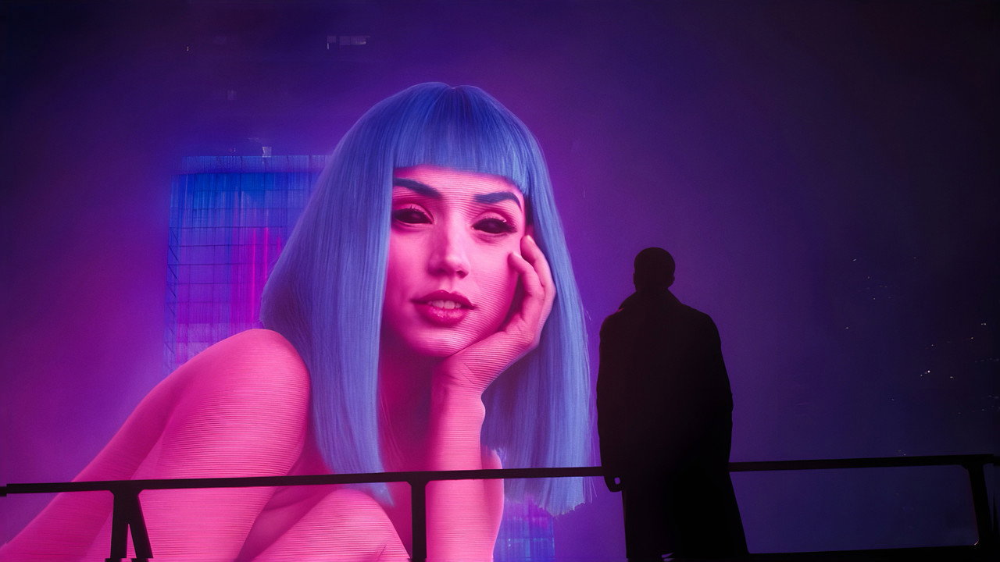
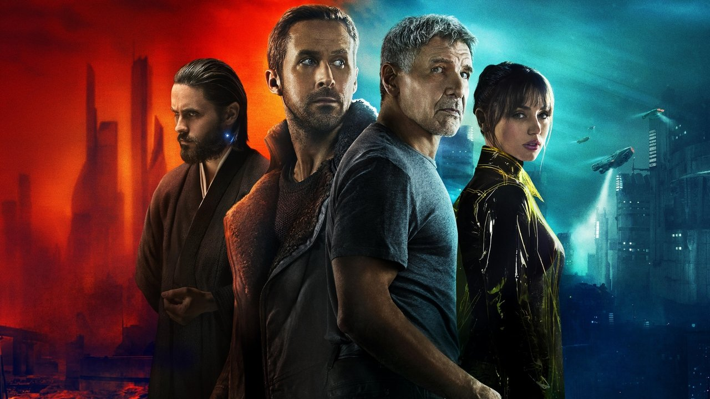
导演与主创 · 他们的历史作品

 降临
降临 沙丘
沙丘 囚徒
囚徒 边境杀手
边境杀手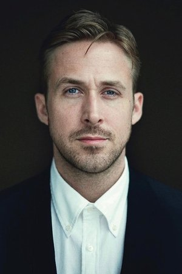
 爱乐之城
爱乐之城 挽救计划
挽救计划
 利刃出鞘
利刃出鞘 疾速追杀：芭蕾杀姬
疾速追杀：芭蕾杀姬 军火贩
军火贩 金发梦露
金发梦露短评（轻微剧透）
《银翼杀手2049》问的是：一个被造出来的人，能不能拥有比人更像人的一生。K 从一开始就知道自己是复制人，也知道自己不特别；他每天回家，对着一个投影说话，把她的存在当成唯一真实的东西。轻微剧透：真正的转折是记忆。K 一直以为自己就是那个「奇迹般出生的孩子」，直到被告知那段记忆是别人植入的——他不是被选中的那个，他只是一个被安排来背锅的人。维伦纽瓦没有在这里煽情，他让 K 自己做了选择：既然我不是那个人，那我就替那个人做一次对的事。结尾他躺在台阶上，雪落在手里。这个问题没有答案，但那个动作是真的。这是科幻片里少见的、把「我是谁」拍成了一次道德选择而不是一次身份揭秘的作品。
为什么值得一看
想看二十一世纪最讲究影像的科幻片的人；能接受 164 分钟慢节奏、大量空镜与哲思独白的观众。含暴力画面与一处裸体（非露骨），情绪克制。内地 2017 年引进过，流媒体可看。
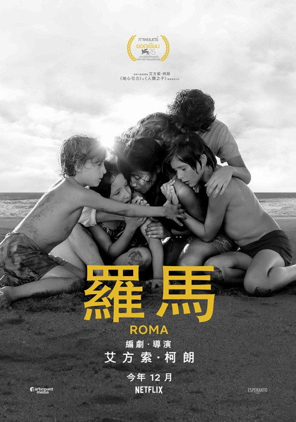
罗马 Roma
「不管别人怎么说，我们女人总是孤身一人。」
剧情梗概
1970 年代初的墨西哥城罗马区，一个中产家庭里，原住民帮佣克莱奥照看四个孩子、打扫房子、遛狗。丈夫长期不回家，妻子索菲亚的婚姻正在崩塌；与此同时，克莱奥自己怀孕了，而孩子的父亲消失了。城市的另一边，学生运动正在被镇压。
亮点
- 第 91 届奥斯卡十项提名、三项获奖：最佳导演、最佳摄影、最佳外语片；阿方索·卡隆一人拿下导演与摄影两座。
- 威尼斯电影节金狮奖。卡隆集编剧、导演、摄影、联合剪辑与制片于一身，是他最私人化的一部。
- 主演雅利扎·阿帕里西奥是原住民出身的幼儿教师，此前从未演过戏；选角时她以为自己试的是配角。
- 全片黑白，用 65mm 胶片拍摄；卡隆坚持不使用任何打光以外的修饰，重建成记忆里的样子。
- 片中大量长镜头与横向平移，摄影机从不进入人物的情绪中心，只在一旁看着——这是它最被称道也最劝退人的地方。
- Netflix 出品并发行，是流媒体电影第一次拿到奥斯卡最佳导演；当年关于「院线 vs 流媒体」的争论几乎盖过了影片本身。
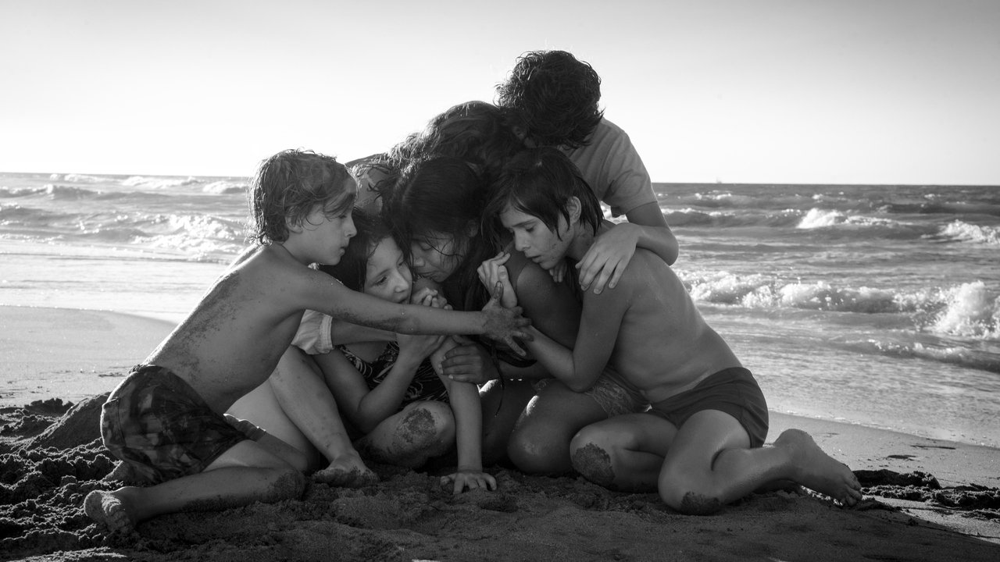
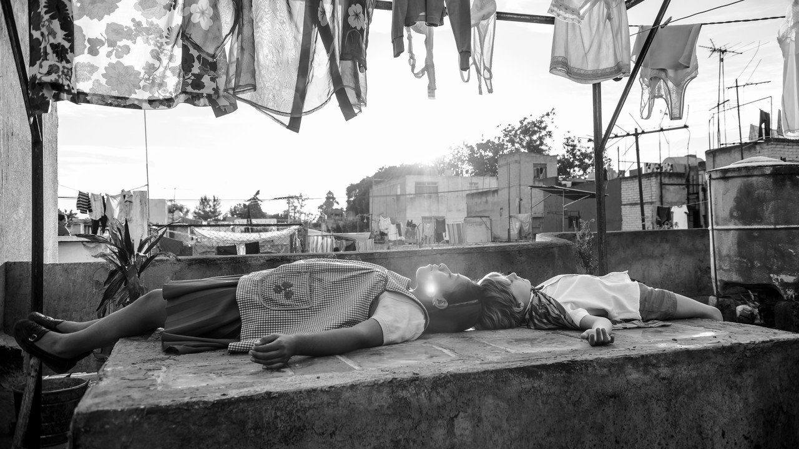
导演与主创 · 他们的历史作品

 哈利·波特与阿兹卡班的囚徒
哈利·波特与阿兹卡班的囚徒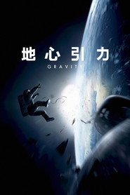
地心引力 人类之子
人类之子 你妈妈也一样
你妈妈也一样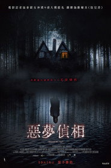
存在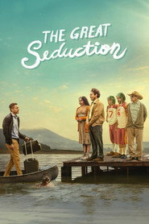
了不起的诱拐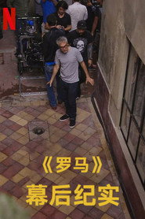
罗马：拍摄实录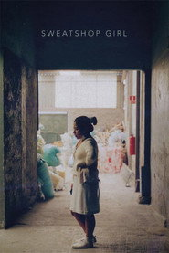
血汗工厂女孩（短片）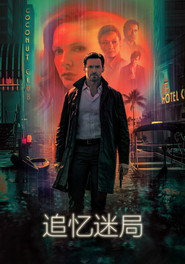
追忆迷局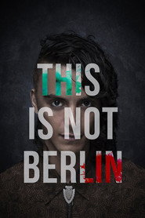
这不是柏林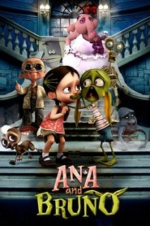
安娜和布鲁诺短评（轻微剧透）
《罗马》最厉害的地方是它的摄影机从不介入。克莱奥被男友抛弃、在医院里失去孩子、在海里把两个孩子救回来——卡隆一个特写都没给，只是横移着拍完，然后继续拍地板、拍狗屎、拍晾着的衣服。轻微剧透：真正的高潮在海滩。克莱奥不会游泳，却走进越来越深的海里把两个孩子拖回来；上岸后，一家人抱在一起，她对索菲亚说了一句：「我很想他死掉。」（指她腹中的孩子）。那不是冷酷，是一个被彻底耗尽的人终于说出了真话。这部片从头到尾都在拍「照顾」这件事：谁在照顾谁，谁被照顾却从没被看见。结尾那场洗衣服的长镜头之后，是屋顶、飞机、天空——卡隆把一整年的隐忍收进了一个平静的俯拍。它不煽情，但看完会难受很久。
为什么值得一看
想看私人记忆被拍成史诗的人；喜欢《一一》《东京物语》这类日常长镜头美学的观众。含一场医院戏与少量暴力画面，节奏极慢、无配乐。内地未映，流媒体可看。
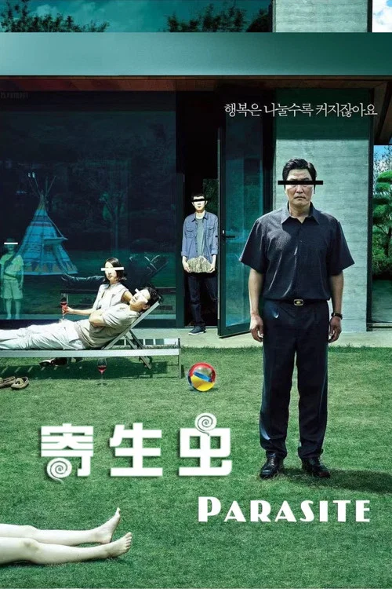
寄生虫 Parasite
「有钱所以善良。」
剧情梗概
金家四口住在首尔的半地下室，没有稳定工作。儿子基宇经朋友介绍，去富人朴社长家给女儿当英语家教。进门之后他发现机会不止一个：妹妹装成艺术治疗师、父亲去当司机、母亲顶替了管家。一家四口陆续进入了这栋房子，直到他们发现地下室里还有别人。
亮点
- 第 72 届戛纳金棕榈；第 92 届奥斯卡最佳影片、最佳导演、最佳原创剧本、最佳国际影片四项大奖。
- 史上第一部拿下奥斯卡最佳影片的非英语电影；也是第一部同时拿下金棕榈与奥斯卡最佳影片的韩国电影。
- 奉俊昊自编自导，剧本灵感来自他二十多岁时做过的富人家教经历，也与 1960 年代韩国电影《下女》形成互文。
- 宋康昊演的金基泽是全片的轴心：一个把所有体面都押在孩子身上的父亲，也是最后动手的那个人。
- 全片的空间设计就是阶级结构：半地下室、地面、山坡上的豪宅、以及豪宅底下的地下堡垒，人物只在这些层之间上下移动。
- 豆瓣 8.8 / 烂番茄 99% / Metacritic 96 / IMDb 8.5，是近十年全球评分最高的非英语片之一。
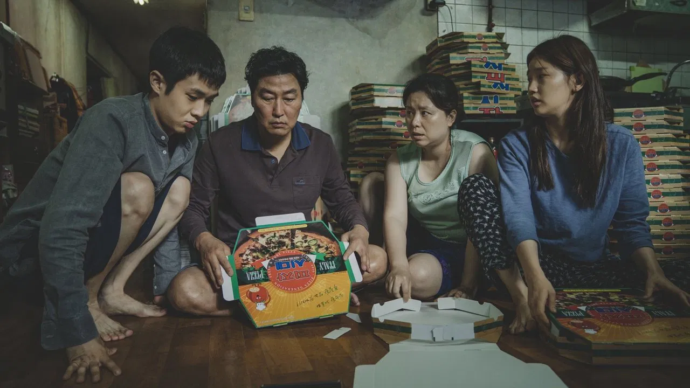
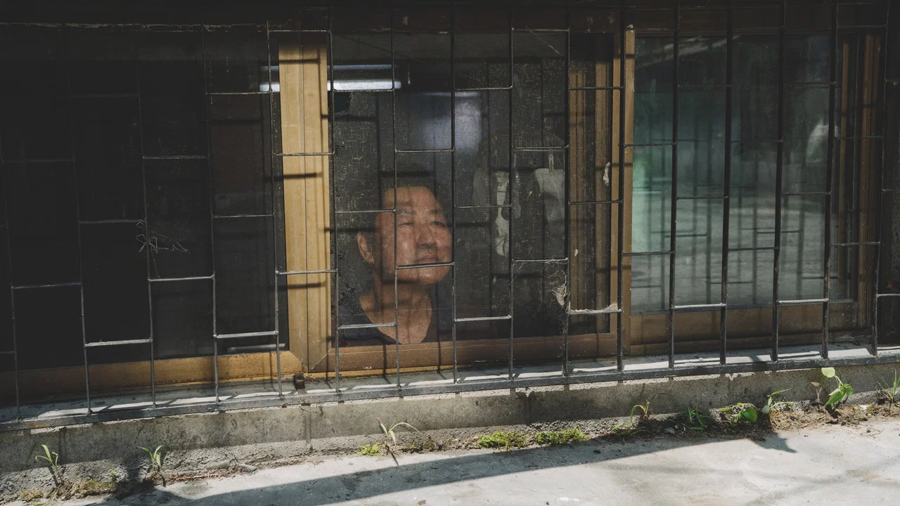
导演与主创 · 他们的历史作品

 雪国列车
雪国列车 杀人回忆
杀人回忆 玉子
玉子 编号17
编号17 雪国列车杀人回忆
雪国列车杀人回忆 汉江怪物
汉江怪物 我要复仇
我要复仇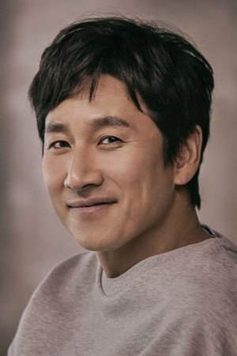
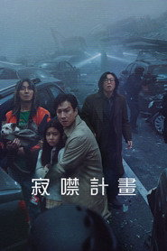
寂静计划短评（轻微剧透）
《寄生虫》的结构精密得像一台机器，前六十分钟几乎是一部轻快的犯罪喜剧——你会笑，也会替他们捏一把汗。轻微剧透：转折发生在那场暴雨。金家的半地下室被污水灌满，一家人从「骗得挺成功」瞬间被冲回原位；第二天，朴家在草地上办生日会，阳光明媚，两家人的处境在这一夜里完成了对调。奉俊昊在这里把喜剧的地板抽掉了：之后的每一步都不再好笑，而且每一步都合理。真正让人坐不住的不是金家做了什么，而是朴家什么都没做错——他们只是看了眼神情、说了句「味道」。结尾基宇在地下室里写那封永远寄不出的信，镜头从豪宅切到半地下室的窗。奉俊昊没有给任何人判罪，他只是把这个结构摆在你面前：在同一片天空下，有人住在坡上，有人住在坡下，而坡下的人以为自己只是运气不好。
为什么值得一看
想看近十年被讨论最多的韩国电影的人；喜欢结构精密、类型混杂（喜剧转惊悚）的观众。含突发暴力与血腥画面，后半段转折很猛。内地未映，流媒体可看。
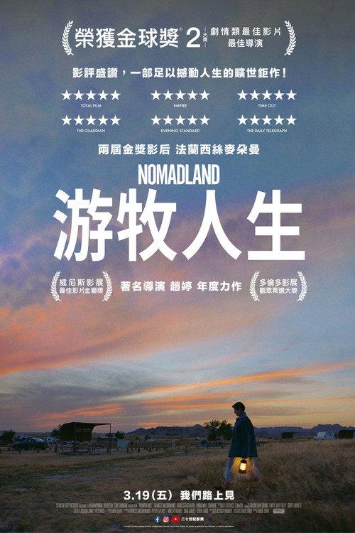
无依之地 Nomadland
「我不是无家可归，我只是没有房子。」
剧情梗概
内华达州一座公司镇的经济崩塌之后，六十多岁的弗恩收拾行囊，开着一辆厢式货车上路，成了美国西部的一名叫「房车流浪者」的现代游牧者。她打季节工、在停车场过夜、在聚会里认识同类的人。全片没有反派，也没有目标，只有一段接一段的路。
亮点
- 第 77 届威尼斯电影节金狮奖；第 93 届奥斯卡最佳影片、最佳导演、最佳女主角三项大奖。
- 赵婷成为首位获得奥斯卡最佳导演的华人女性，也是史上第二位获此奖的女性。
- 改编自杰西卡·布鲁德的纪实作品《无依之地：生存于21世纪的美国》；书中人物琳达·梅、斯旺基、鲍勃·韦尔斯在片中出演自己。
- 弗兰西斯·麦克多蒙德同时是制片人与主演；她买下版权后找赵婷执导，给了后者完全的自由度。
- 全片只有两位职业演员，其余几乎都是真实的游牧者；剧组跟着他们真的住了几个月。
- 烂番茄 94% / Metacritic 94，影评界几乎一致好评；豆瓣 8.0 / IMDb 7.3 的落差主要来自「几乎没有剧情」——它更像一部纪录片式的观察。
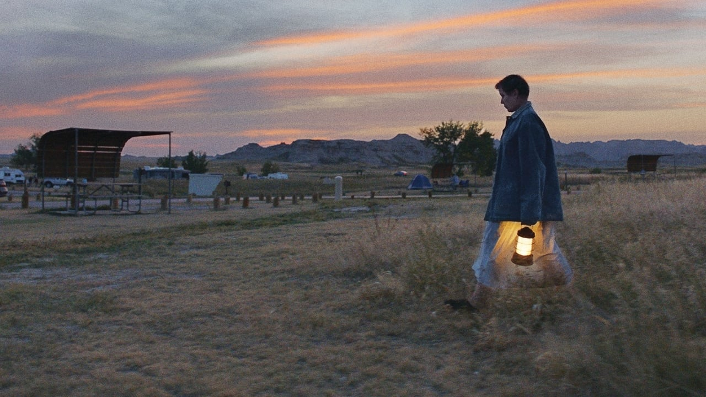
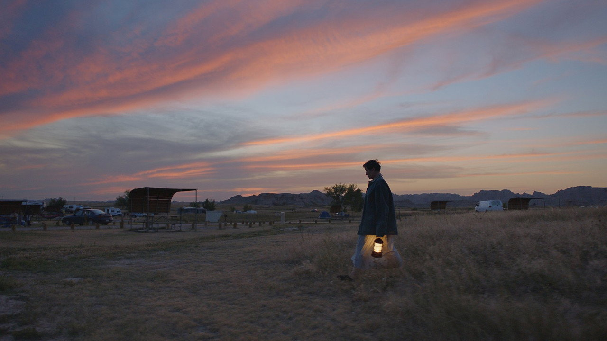
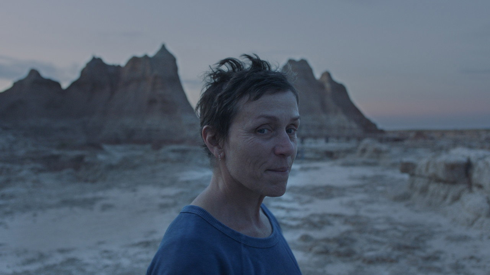
导演与主创 · 他们的历史作品
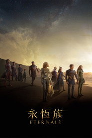
永恒族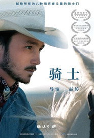
骑士 三块广告牌
三块广告牌 哥斯拉
哥斯拉短评（轻微剧透）
《无依之地》没有故事，只有处境。弗恩不是被生活打垮之后去流浪的，她是在丈夫去世、小镇消失之后，发现自己剩下的东西正好装得进一辆车。赵婷的处理非常克制：不给配乐煽情，不给角色下判断，只让镜头跟着她洗车、做饭、在夜里把门关上。轻微剧透：真正的转折不是某件事，而是她中途去了妹妹家——那栋有客厅、有餐桌、有洗碗机的房子。她可以在那里住下去，所有人都欢迎她留下。然后她回到车上，继续往东开。这个选择是这部片唯一的一次「表态」，也是它最重的一笔：她不是没有别的选择，她只是选了这条。结尾她站在自己那间空厂房里说「我在路上见到了很多人」，然后画面回到公路。这不是励志，是一个人对「什么是家」给出的私人答案。
为什么值得一看
想看近年最被认可的现代公路片的人；喜欢纪实质感、安静长镜头与不煽情的观众。无暴力与情色内容，节奏舒缓、几乎没有戏剧冲突。内地未映，流媒体可看。
世界上最糟糕的人 The Worst Person in the World
「我花了很多时间，才敢浪费自己的人生。」
剧情梗概
朱莉快三十岁了。她学过医、学过心理学，又转去摄影，然后做了书店店员；男朋友阿克塞尔比她大十几岁，是个成功的漫画家，催她生孩子。某天晚上她闯进一场婚礼，遇见了咖啡师艾文德。影片分十二个章节，加上一段序与一段尾声，讲她三十岁这一年。
亮点
- 第 74 届戛纳主竞赛单元，雷娜特·赖因斯夫拿下最佳女演员。
- 约阿希姆·提尔「奥斯陆三部曲」的收官之作（前两部是《重奏》2006 与《奥斯陆，8月31日》2011），三部都写这座城市里的人。
- 全片分为十二章加序与尾声，章节之间节奏完全不同——有的像喜剧，有的像恐怖片，有的像一场梦。
- 雷娜特·赖因斯夫几乎是凭这部片从挪威舞台剧演员变成国际面孔；她的表演被评价为「把犹豫演成了动作」。
- 片中有一段著名的「时间静止」：朱莉跑过整座奥斯陆去找艾文德，城市里的所有人都被定住。
- 口碑相当一致：烂番茄 96% / Metacritic 90 / 豆瓣 8.0，是近年评价最高的非英语当代片之一。
导演与主创 · 他们的历史作品
短评（轻微剧透）
《世界上最糟糕的人》写的不是选择，是「不选择」。朱莉不是不知道自己想要什么，她是想要的东西太多了，每一样都真实，所以每一样都做不彻底。提尔的高明在于他没把这件事拍成成长故事：她换专业、换男友、换城市，每次都认真，每次都半途。轻微剧透：真正扎人的转折在后段。她终于和艾文德在一起了——那个让她觉得自由、不催她做任何决定的人——却在某天清晨发现，跟这个人在一起她也一样空虚。于是她明白了问题不在阿克塞尔，也不在艾文德，而在她自己一直在等一个「终于对了」的时刻。尾声里她成了片场摄影师，拿着相机给别人打光。她没有变成某种人，只是终于开始做一件事。这部片最温柔的地方在于：它没有惩罚她。三十岁这年的所有犹豫，最后都被允许了。
为什么值得一看
想看近年最被讨论的北欧当代片的人；喜欢章节式结构、城市气质与情感细节的观众。含一段分娩与病痛情节、少量裸露（非露骨）。内地未映，流媒体可看。
分手的决心 Decision to Leave
「他说我像山，可我从来没想过要成为山。」
剧情梗概
韩国某处山顶，一名男子坠亡。是自杀还是他杀？刑警海俊到场后，开始怀疑死者的妻子徐来。随着调查深入，他发现自己陷入一场由谎言与欲望织成的迷局：这个女人似乎一点也不怕被审查，她只是想被看见。
亮点
- 第 75 届戛纳电影节主竞赛单元，朴赞郁拿下最佳导演。
- 朴赞郁与《小姐》的编剧郑瑞景再次合作；两人把一部刑侦片写成了爱情片，或者说把爱情片写成了刑侦片。
- 汤唯演的徐来是近年韩国电影里最特别的女性角色之一：一个中文说得比韩语好的「嫌疑人」，全片靠表情和一点点韩语推进。
- 朴海日演的海俊是个失眠的刑警；他的职业是找出真相，而这部片让他爱上了那个最不像真相的人。
- 全片在「看」这件事上做足文章：监控画面、手机屏幕、望远镜、以及两个人互相盯着看的那些近景。
- 口碑分裂点在于预期：烂番茄 94% / Metacritic 85，影评界把它当成年度最佳之一；豆瓣 7.6 / IMDb 7.3，冲着悬疑来的观众会觉得节奏太慢、线索太散。
导演与主创 · 他们的历史作品
 小姐
小姐 色‧戒汉江怪物杀人回忆
色‧戒汉江怪物杀人回忆短评（轻微剧透）
《分手的决心》是一部把「调查」拍成「恋爱」的电影。海俊每一次审问徐来，都是在靠近她；而徐来每一次回答，都是在把自己交出去一点点。朴赞郁的高明在于他从不让这两件事分开——你分不清他是在找证据，还是在找机会再见她一面。轻微剧透：真正的转折在中后段。徐来第二次嫁人，第二任丈夫又死了，海俊这次成了唯一希望她不是凶手的人，也是唯一知道她可能是的人。最后那场海滩戏是两人关系的总结：他把她的案子彻底了结了，而她也终于把话说清楚了——不是用韩语，是用中文留在一个他永远要翻译的录音里。结尾海俊在海边一遍遍喊她的名字，海浪把脚印抹掉。这不是悬疑的解答，是一个男人终于承认：他从头到尾都被看穿了，而他甘愿。
为什么值得一看
想看近几年最被国际认可的韩国作者电影的人；喜欢《小姐》《老男孩》那种华丽而克制的朴赞郁的观众。含自杀、坠亡与少量血腥画面，节奏舒缓、叙事含蓄。内地未映，流媒体可看。
奥本海默 Oppenheimer
「我现在成了死神，世界的毁灭者。」
剧情梗概
战时，物理学家罗伯特·奥本海默被任命主持洛斯阿拉莫斯实验室，推进绝密的曼哈顿计划。全片用彩色与黑白两条线交叉：彩色是他的主观视角，黑白是听证会上的客观陈述。原子弹试爆成功后，他成了英雄；几年之后，他成了被审查的对象。
亮点
- 第 96 届奥斯卡十三项提名、七项获奖：最佳影片、最佳导演、最佳男主角（基利安·墨菲）、最佳男配角（小罗伯特·唐尼）、最佳摄影、最佳剪辑、最佳原创配乐。
- 改编自凯·伯德与马丁·舍温的普利策奖传记《美国普罗米修斯》；诺兰自编自导，是他第一部传记片。
- 全片用 65mm IMAX 胶片拍摄，是影史最长的 IMAX 胶片电影之一；三位一体试爆那场戏是实景拍摄，没有用 CGI。
- 诺兰把彩色与黑白分开使用：彩色是奥本海默看到的世界，黑白是别人看到的世界——这个设计是全片的叙事骨架。
- 配乐由路德维格·戈兰松创作，以小提琴为主；他在采访中说小提琴「可以一秒钟从优美变成让人不适」，正对应主角。
- 全球票房约 9.7 亿美元，是影史票房最高的传记片；内地 2023 年 8 月 30 日公映，票房约 4.4 亿元人民币。
导演与主创 · 他们的历史作品

 星际穿越盗梦空间
星际穿越盗梦空间 蝙蝠侠：黑暗骑士
蝙蝠侠：黑暗骑士 蝙蝠侠：黑暗骑士崛起
蝙蝠侠：黑暗骑士崛起
 惊变28天盗梦空间
惊变28天盗梦空间 太阳浩劫
太阳浩劫 时间规划局
时间规划局 复仇者联盟
复仇者联盟 钢铁侠
钢铁侠 复仇者联盟4：终局之战
复仇者联盟4：终局之战短评（轻微剧透）
《奥本海默》最特别的地方是它把「知道后果」这件事拍成了恐怖片。诺兰不拍广岛与长崎的画面——他没有给你任何一个受害者的镜头，却让那两声闷响一直压在三个小时的每一场戏下面。轻微剧透：真正的转折不是试爆，是听证会。奥本海默从「造出原子弹的人」变成「需要被证明忠诚的人」，而整场审判的依据，是他自己过去说过的话、见过的人、睡过的人。诺兰在这里做了一个非常冷的处理：他让观众在最后才明白，斯特劳斯动手的动机不过是自尊心受了一点伤。三个小时下来，最可怕的不是原子弹，是这件事竟如此平常——一个人可以被一个更小的人毁掉，而国家机器只需要一次会议。结尾那句「我现在成了死神」不是台词的高光，是一句迟迟没有说出口的自供。
为什么值得一看
想看近年最重要的好莱坞大片的人；能接受 180 分钟、大量对白与三线交叉叙事的观众。含少量裸露与性暗示（非露骨）、核爆画面与强烈的心理压迫。内地 2023 年公映过，流媒体可看。